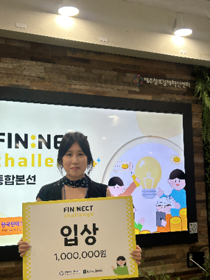
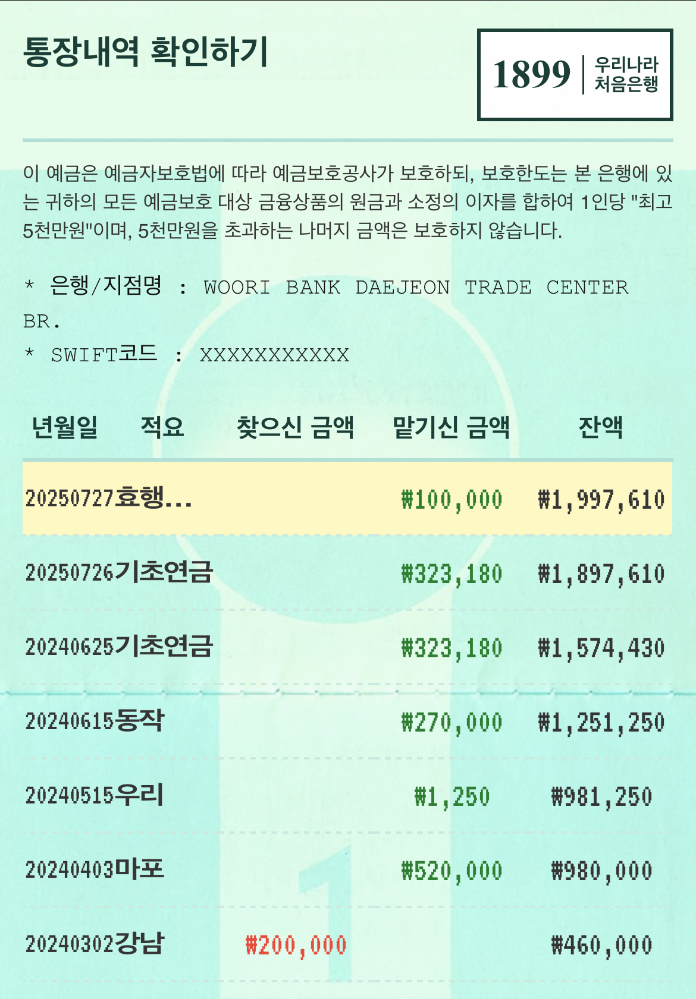
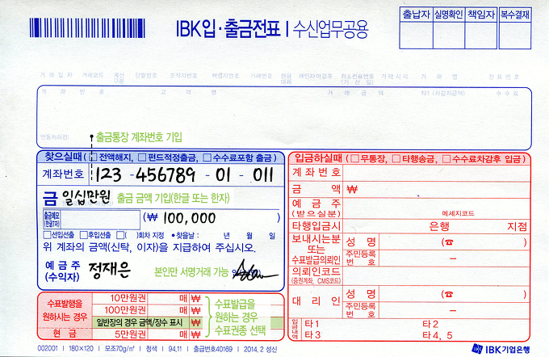
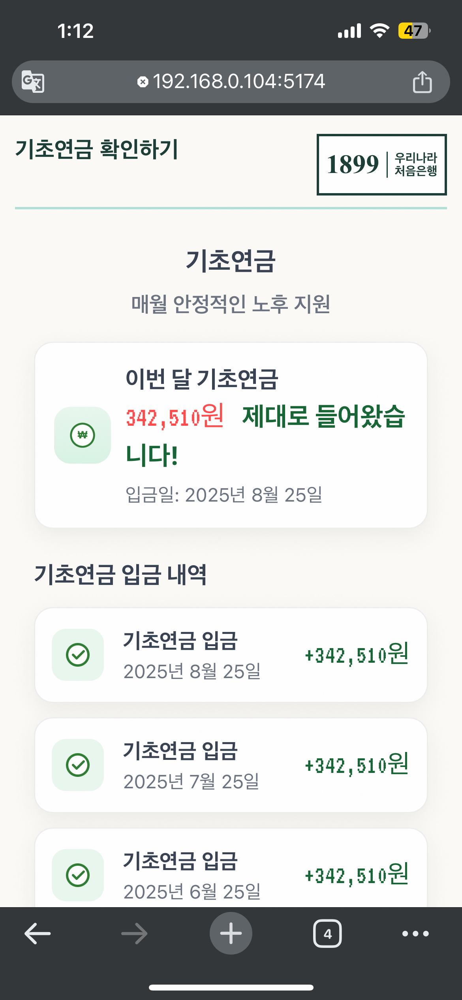
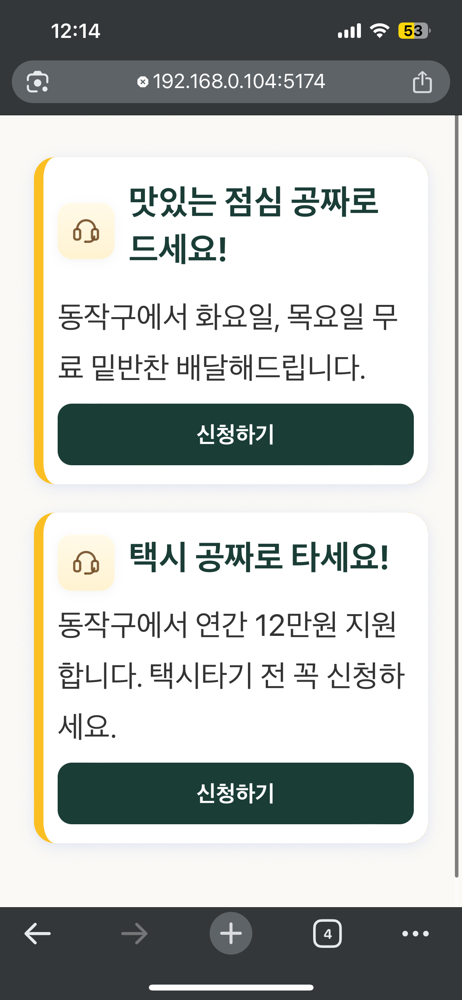
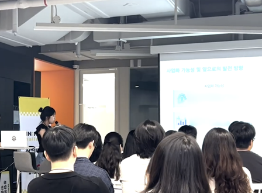

사용자 조사
65세 이상 어르신 대상 설문으로 모바일뱅킹 불안, 기초연금 확인 방식, 복지 정보 접근성을 확인했습니다.
Activity 04 · FIN:NECT Challenge
종이통장의 익숙함은 그대로, 이체는 손글씨로, 복지는 알아서 챙겨주는 시니어 금융·복지 통합 서비스 기획 프로젝트입니다.
Planning senior banking around trust, habit, and welfare access

Project Introduction
우리동네 어르신통장은 고령층이 낯선 모바일뱅킹을 억지로 익히지 않아도 익숙한 종이통장 경험 안에서 금융 거래와 복지 정보를 함께 확인할 수 있도록 설계한 서비스입니다. 깨비 할머니 통장이 앱 구현과 AI 기술 구현 중심이었다면, 이 프로젝트는 FIN:NECT 챌린지에서 서비스 아이디어를 사용자 조사, 기능 설계, 기술 실현성, 사업화 가능성까지 구체화한 기획 중심 프로젝트입니다.
고령층 금융 문제를 단순히 앱을 쉽게 만드는 문제로 보지 않고, 종이통장, 이체전표, 기초연금 확인, 지역 복지혜택을 하나의 흐름으로 재정의했습니다.
65세 이상 어르신 대상 설문으로 모바일뱅킹 불안, 기초연금 확인 방식, 복지 정보 접근성을 확인했습니다.
통장 확인, 손글씨 이체, 복지혜택 알림을 어르신의 실제 생활 흐름에 맞춰 연결했습니다.
은행과 지자체가 함께 제공할 수 있는 B2B2C 모델과 특허 출원 가능성까지 정리했습니다.
Problem Definition
모바일뱅킹 이용 장벽과 복지 정보 사각지대는 별개의 문제가 아니었습니다. 어르신에게 필요한 것은 더 많은 메뉴가 아니라, 돈이 잘 들어왔는지 확인하고 받을 수 있는 혜택을 놓치지 않도록 돕는 서비스였습니다.
금융 서비스는 모바일 중심으로 이동하지만 고령층은 복잡한 화면, 계좌번호 입력 실수, 비대면 거래 불신 때문에 접근성이 낮았습니다.
복지 혜택은 존재하지만 어떤 제도가 있고 본인이 받을 수 있는지 알기 어려웠습니다. 사각지대의 핵심 원인을 자격 부족이 아니라 정보 접근성 부족으로 보았습니다.
그래서 문제를 “어르신이 모바일뱅킹을 배우게 하자”가 아니라 “모바일 금융이 어르신의 익숙한 금융 방식에 맞춰지게 하자”로 재정의했습니다.
Research & Persona
서울 동작구 흑석동 주민센터 문서반 수업에 참여한 65세 이상 어르신을 대상으로 스마트폰 뱅킹 앱 사용 장벽, 기초연금 확인 방식, 복지혜택 정보 접근성을 조사했습니다.
화면이 복잡해서 어렵다.
계좌번호를 잘못 입력할까 불안하다.
통장도 없고, 눈에 보이는 직원도 없으니 불안하고 못 믿겠다.
복잡한 화면 구성, 신뢰성 부족, 계좌번호 입력 어려움, 사용법 모름이 핵심 불안으로 나타났습니다.
상당수는 기초연금 입금 여부를 확인하기 위해 은행에 방문해 통장을 찍어본다고 응답했습니다.
TV, 신문, 주변 지인, 주민센터처럼 분산된 경로에 의존했고 자동 알림 서비스에 긍정적인 반응을 보였습니다.
Solution Overview
기능을 많이 넣기보다 어르신의 실제 생활 흐름인 통장 확인, 돈 확인, 필요한 이체, 받을 혜택 확인을 하나의 서비스 흐름으로 재구성했습니다.
종이통장처럼 거래 내역과 잔액을 확인합니다.
종이에 쓴 이체 정보를 촬영해 자동 입력합니다.
매달 중요한 생활자금 입금 여부를 빠르게 확인합니다.
거주지 기준으로 받을 수 있는 복지 정보를 알려줍니다.
예금주, 계좌번호, 거래내역, 잔액을 익숙한 종이통장 화면에 가깝게 배치했습니다.
은행 창구의 이체전표 경험을 모바일 카메라와 AI 인식 흐름으로 옮겼습니다.
기초연금 입금 확인과 지역 맞춤 복지 정보를 통장 안에서 먼저 보여줍니다.
Planning 01
고령층은 종이통장을 통해 잔액과 입출금 내역을 확인하는 방식에 익숙합니다. 그래서 실제 통장에서 보던 정보 배치와 활자 느낌을 반영해 “내 통장 같다”는 신뢰감을 주는 방향으로 화면을 기획했습니다.

Planning 02 · OCR Feasibility
모바일뱅킹에서 어르신이 가장 불안해하는 지점은 계좌번호와 금액 입력입니다. 그래서 작은 키패드 입력 대신, 종이에 쓰고 촬영한 뒤 AI가 계좌번호, 예금주, 금액을 구조화하는 흐름을 검증했습니다.

.GIF)
| 네이버 Clova OCR | 텍스트 추출 중심이라 정형 문서에는 적합하지만, 위치와 의미 분석에는 별도 로직이 필요했습니다. |
|---|---|
| ChatGPT API | 비정형 손글씨 전표에서도 문맥 기반으로 계좌번호, 예금주, 금액을 구조화할 수 있어 이체 정보 추출에 더 적합했습니다. |
| 검증 결론 | 총 189건, 1239단어를 테스트했고 금액 인식률 97.8%, 건당 인식 비용 약 0.04달러 수준으로 실현 가능성을 확인했습니다. |
계좌번호와 예금주명이 은행 시스템에서 일치할 때만 이체가 진행되도록 기획했습니다.
금액을 숫자와 한글로 함께 작성하게 하고 두 값이 일치하는지 검증합니다.
Planning 03 · Welfare Data
현장 조사에서 기초연금 입금 확인과 복지 정보 접근이 중요한 시나리오로 드러났습니다. 그래서 복지혜택을 혜택명만 나열하지 않고, 어르신이 실제로 어떻게 받는 혜택인지 이해할 수 있게 지급 방식 기준으로 분류했습니다.


| 통장으로 받기 | 기초연금, 교통비 환급, 효행장려금처럼 계좌로 직접 입금되는 혜택 |
|---|---|
| 카드로 받기 | 교통카드, 복지카드, 상품권처럼 카드·포인트·바우처로 받는 혜택 |
| 서비스로 받기 | 도시락 배달, 돌봄 서비스, 무료 진료처럼 현금이 아닌 서비스 형태의 혜택 |
Differentiation & Business Model
기존 뱅킹 앱은 계좌 조회, 이체, 인증 기능이 중심이고 기존 복지 앱은 사용자가 직접 검색해야 합니다. 우리동네 어르신통장은 통장 내역과 거주지 정보를 기반으로 금융 확인과 복지 안내를 한 화면 흐름에서 연결합니다.
종이통장 기반 UI로 고령층의 심리적 장벽을 낮춥니다.
이체전표 작성 방식과 AI 인식을 결합해 계좌번호 입력 부담을 줄입니다.
통장형, 카드형, 서비스형으로 구분해 혜택 수령 방식을 쉽게 이해하게 합니다.
은행은 시니어 전용 앱을 확보하고, 지자체는 복지 정보 전달 효율을 높일 수 있습니다.
시니어 전용 앱 확보, 앱 자체 개발 비용 절감
복지 정보 전달 효율화, 디지털 격차 해소
편리한 금융 서비스와 맞춤형 복지 정보 제공
은행과 지자체가 생활 금융 접점을 함께 제공합니다.
Validation & Iteration
초기 제안은 종이통장 UI, 손글씨 이체, 복지 알림 아이디어 중심이었습니다. 이후 심사위원 피드백을 바탕으로 익숙함 검증, 복지 정보 가치 증명, 사업화 전략, 특허 출원까지 발전시켰습니다.

Result
우리동네 어르신통장은 고령층의 금융 접근성 문제와 복지 정보 사각지대 문제를 하나의 서비스로 연결한 기획 프로젝트입니다. 사용자 조사, 페르소나, 앱 화면 기획, 손글씨 인식 기술 검증, 복지혜택 데이터 분류, 사업화 모델까지 제안했습니다.
깨비 할머니 통장은 앱 구현과 AI 기술 구현 중심 프로젝트였습니다. 반면 우리동네 어르신통장은 FIN:NECT 챌린지의 특성에 맞춰 아이디어를 서비스 기획, 기술 검증, 시장성, 사업화 모델까지 구체화한 기획 중심 프로젝트입니다.
출원번호 10-2025-0118113
손글씨 인식 기반의 금융 거래 및 맞춤형 복지 정보 제공 시스템 및 그 방법